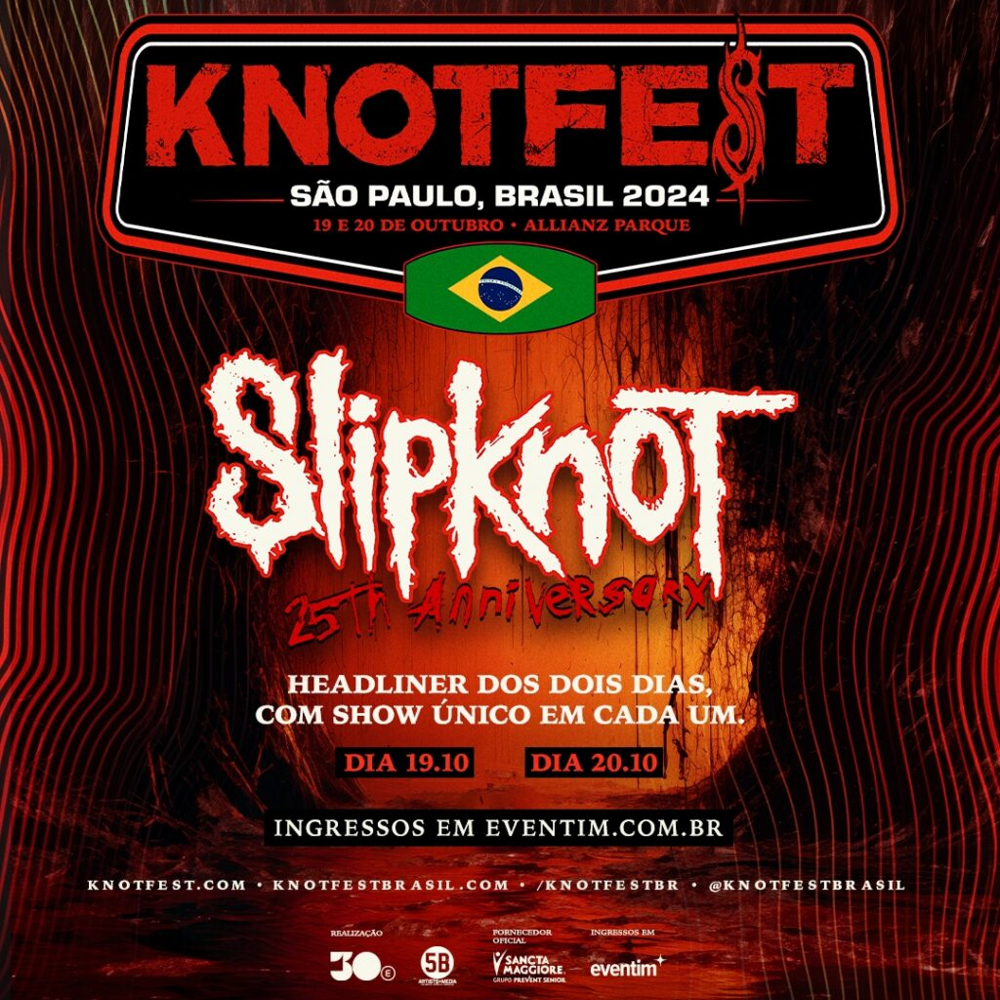

KNOTFEST Brasil receberá o Slipknot
em duas noites, com sets inéditos, no Allianz Parque,
em São Paulo
No final do ano passado, o Slipknot, uma das maiores bandas de heavy metal do planeta, anunciou uma turnê especial em comemoração aos 25 anos do lançamento de seu primeiro álbum, considerado pelos críticos como fundamental para o Metal Moderno. O Brasil foi incluído na tour e com um diferencial: nos dias 19 e 20 de outubro, será realizada, no Allianz Parque, em São Paulo, a segunda edição brasileira do KNOTFEST – uma produção da 30e e 5B Artist Management. O Slipknot será a atração principal dos dois dias do festival, apresentando um set único a cada dia. A pré-venda de ingressos para a segunda edição do KNOTFEST Brasil começa no dia 1º de fevereiro, com vendas gerais a partir do dia 2 de fevereiro, ambas no site da Eventim.
"Em 2022, realizamos a estreia do KNOTFEST no Brasil com ingressos esgotados, 45.000 pessoas participaram do evento naquela ocasião. Poder dar continuidade à essa parceria, que está só no começo, com uma edição que celebra os 25 anos de Slipknot, nos deixa ainda mais animados pelo que vamos fazer em 2024. Além de algumas novidades, como a mudança de venue, vamos ter outras surpresas para este ano", comenta Pepeu Correa, CEO da 30e.
O KNOTFEST Museum retorna ao Brasil com uma experiência nova e aprimorada proporcionando aos fãs uma verdadeira imersão nos 25 anos de carreira do Slipknot, com itens de coleção – de figurinos e itens pessoais a instrumentos e memorabília. Parada obrigatória para conhecer detalhes do universo do Slipknot: uniformes, máscaras, discos, pôsteres e bonecos fazem parte do acervo exibido, que ainda conta com muita interatividade com músicas e vídeos.
Os outros nomes que vão compor o line-up dos dois dias do KNOTFEST Brasil serão anunciados em breve.